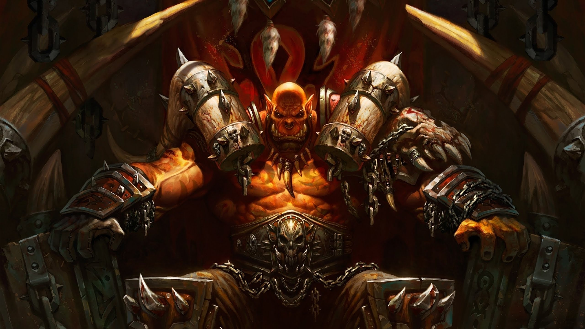

Гаррош Адский Крик

Гаррош Адский Крик -сын Грома Адского Крика, и бывший лидер армии Песни Войны является действующим вождем Орды. С открытием Темного Портала Гаррош был приглашен в Орду самим Траллом и являлся личным его советником. Позднее Гаррош возглавлял Армию Песни Войны в Нордсколе и получил должность действующего вождя в отсутствие Тралла.
Гаррош очень известен своей ненавистью к Альянсу и часто выражает желание Орды о крупном нападении на своих недоброжелателей.
Биография
До открытия Темного Портала
До второго открытия Темного портала в Запределье, большинство Маг'харов сосредоточили свой род в Гарадаре, небольшой крепости в Награнде. Они были больны красной оспой. Среди них был Гаррош.
Когда Каргат Острорук посетил Гарадар, для поиска воинов в свою армию, Гаррош спросил его о своем отце. Он вышел перед Каргатом и хотел о чем-то спросить, но у него из-за болезни из рта полилась кровь и желчь. Каргат ответил, что они (маг'хары из Гарадара) не орки, а слабаки; он их попросил сделать Орде милость и подохнуть здесь! Если они не могут защитить свой народ, у них нет права жить!
Позже Гаррош узнал от Великой Матери Гейи о гибели своего отца, что заставило впасть его в депрессию.
Пылающий Крестовый Поход
Гаррош становится выдающимся лидером среди Маг'харов. Он помогает Джорину Мертвому Глазу, сыну вождя Клана Кровавой Глазницы, Килрогга Мертвого Глаза. Когда герои впервые встречают Гарроша он угрюмый, пессимистичный и депрессивный. Он сильно волнуется о здоровье Великой Матери Гейи главе клана Маг'харов, которая серьезно больна. В случае ее гибели он понимает, что больше ему никто не поможет управлять кланом Маг'харов, и могут начаться разногласия внутри клана. Гаррош не хотел больше всего повторить ошибок своего отца.
Великий и коварный воин, Гром Адский Крик, жаждал власти. Он надеялся, что выпив крови Маннорота, он и его воины смогут защитить свой род от любых неприятелей. Но выпив крови они оказались под властью самого Маннорота.
Гаррошу было стыдно за своего отца. Все что происходило до этих событий неизвестно Гаррошу. Он не знал, что его отец был очень смелым воином, пока не прибывший в Награнд Тралл не поведал Гаррошу эту историю. Тралл рассказал, что Гром Адский Крик умер, при попытке освободить своих воинов от власти Маннорота. Видимо, этот рассказ добавил Гаррошу сил и уверенности, полагая, что не потерпит неудачи за себя и свой народ.
Катаклизм
После того как Тралл присоединился к членам Круга земли для снятия дальнейшей угрозы Катаклизма, Гарроша провозглашают новым преемником Вождя Орды. Теперь Гаррош руководит своими делами из центра Оргриммара. Однако, помимо защитных действий его очень заботит принадлежность к Орде других рас. Он перестроил Оргриммар используя массивные материалы из крепких металлов и камней, которые использовались в Нордсколе.
Вознесение на трон вождя Гарроша было хорошо воспринято только орками. Лидеры других рас, такие как Вол'джин, лидер Племени Черного Копья, презирает Гарроша, тем что тот без каких либо причин и объяснений люто ненавидит Альянс. Кэрн Кровавое Копыто, Верховный Вождь Тауренов, видевший, что Гаррош подорвал мирные поставки древесины из Ясеневого леса, бросил вызов Гаррошу. Кэрн был убит, и как выяснилось позже, Магата из Клана Зловещего тотема смазала клинок Гарроша смертельным ядом. Сильвана Ветрокрылая, Королева банши, кажется, тоже не высокого мнения о новом Вожде Орды, отзываясь о нем как об огре.